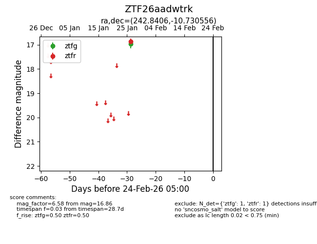
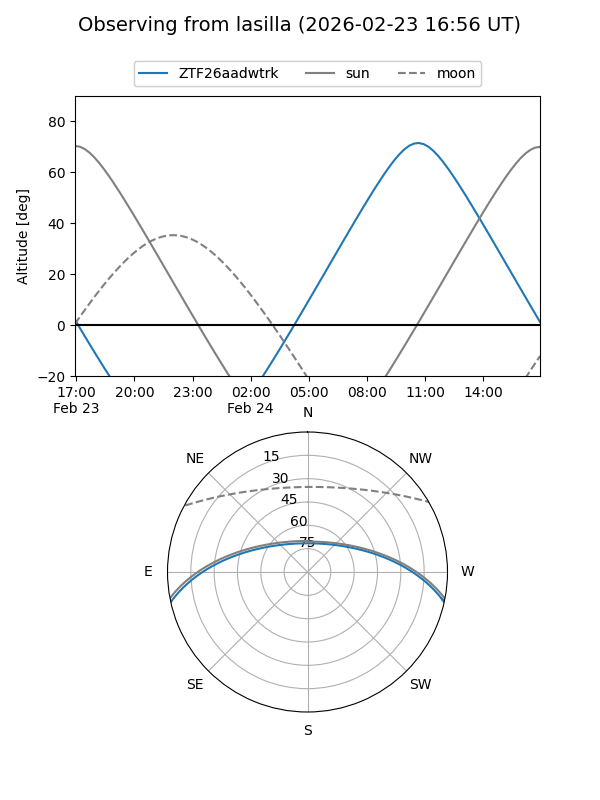
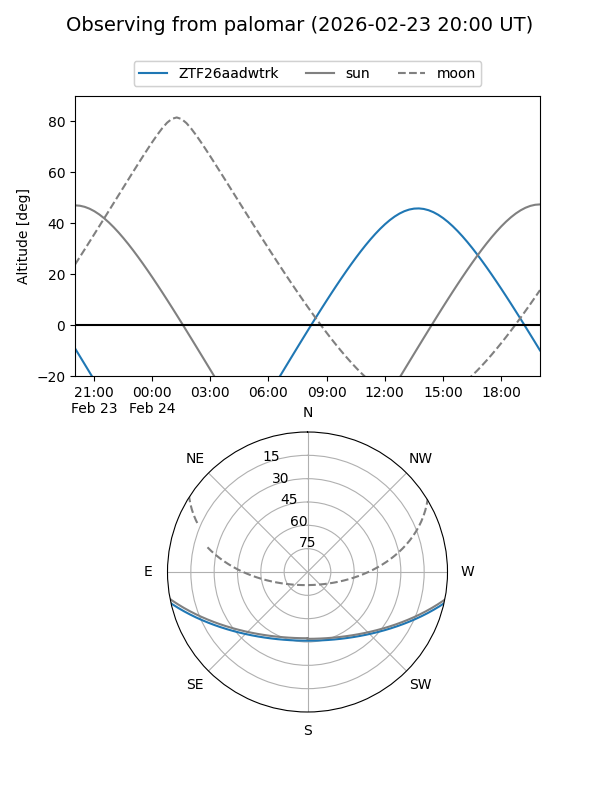

ZTF26aadwtrk
Target ZTF26aadwtrk at 2026-01-28 15:16
Aliases and brokers:
FINK: link
Lasair: link
ALeRCE: link
alt names
ZTF26aadwtrk (ztf,fink_ztf)
Coordinates:
equatorial (ra, dec) = 242.8406,-10.73056
equatorial (HMS+DMS) = 16:11:21.74,-10:43:50.00
galactic (l, b) = (1.8378,+28.51513)
Flags:
Photometry:
last ztfg=16.97, ztfr=16.86
1 ztfg, 1 ztfr detections
Lightcurve

Visibility


Additional plots